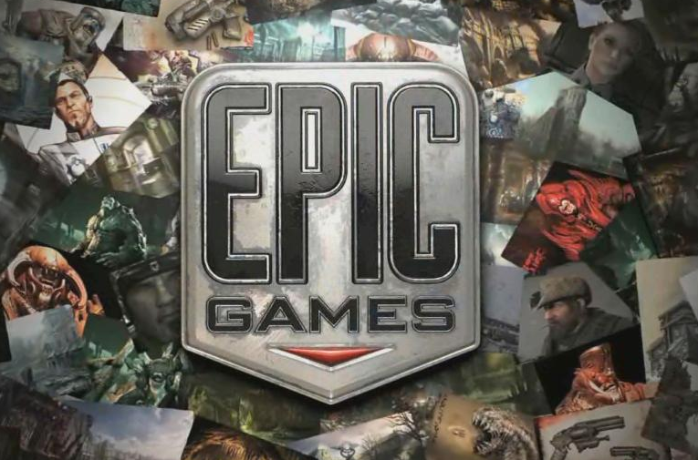

Gears of War

Gears of War es un videojuego de disparos en tercera persona, del género
acción-aventura y estrategia, desarrollado por Epic Games utilizando el
motor de videojuego Unreal Engine 3. Gears of War fue publicado por
Microsoft Game Studios para la consola Xbox 360 el 16 de enero de 2006 en
América del Norte, el 26 de enero en Europa, el 29 de enero en Australia
y el 10 de enero de 2007 en Japón.